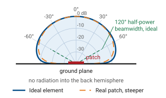
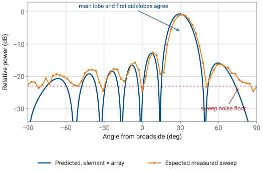

L22 - Antenna Pattern Theory#
Antenna Pattern Theory
The array factor is not the antenna pattern.
Lesson 22 · Antennas, Phased Arrays, and Radar Systems · Dr. Neil Rogers
Learning Objectives
- I can distinguish the array factor from the true antenna pattern and state what the element factor contributes.
- I can apply pattern multiplication with a realistic patch element pattern to predict the full array pattern.
- I can quantify scan loss — the element-pattern penalty for steering off broadside.
- I can explain why measured sidelobe and backlobe structure departs from the array-factor prediction.
In Lesson 21 you measured the array factor and most of the numbers landed where theory said they would: a half-power beamwidth near \(13^\circ\), a first null about \(15^\circ\) off the peak, and first sidelobes roughly 13 dB down. The parts that did not match are the subject of this lesson. Your steered peaks were a little low and a little short of the commanded angle, the sidelobes on the two sides of the beam were not the same height, and there was structure behind the array that the array factor says cannot exist. Each of those is the element pattern, the hardware, or the room showing up in the trace, and each of them is predictable.
What the sweep measures
Every trace you have recorded on the PHASER is a received-power sweep: the software steps the commanded steer angle across the scan range, applies the phase ramp for each step, and records the power out of the beamformer while the HB100 source sits still. By reciprocity that trace follows the array’s pattern, but the x-axis is the commanded steer angle, not a measured arrival angle. What the array does with the incoming wave at each step is exactly what it would do to a transmitted wave, so the sweep is a legitimate way to read a pattern.
The pattern is a product
The quantity that sweep traces out is the full antenna pattern, and the array factor is only half of it. Lesson 16 established pattern multiplication for an array of identical elements,
where \(AF(\theta)\) carries the geometry and the phasing of the array and \(EF(\theta)\) carries the pattern of one element sitting in that array. Up to now we have compared measurements against \(AF(\theta)\) alone, and it held, because near broadside a patch radiates almost uniformly and \(EF \approx 1\) across the main lobe. The approximation fails as soon as you steer.
Key point
The array factor is not the antenna pattern. The array factor is what the element positions and phases contribute; the pattern is that product with the element’s own pattern. Everything the array factor gets wrong off broadside is the element factor.
The element: a microstrip patch
The eight radiators on the PHASER are microstrip patches over a continuous ground plane. A patch is a half-wavelength resonant cavity radiating from the two open edges, and the ground plane underneath it is large enough that almost nothing reaches the back. Two consequences follow, and both are visible in your data.
The ideal element
First, the element radiates into one hemisphere with a broad, smooth pattern whose peak is at broadside. Start with the ideal element, the one that collects exactly its share of the array’s aperture. Seen from an angle \(\theta\) off broadside, that share of aperture presents its projected area \(A\cos\theta\), so the element gain follows the projected area:
which is a field pattern of \(\sqrt{\cos\theta}\). This is the projected-aperture rule, and it is the model the course uses for scan-loss numbers. It puts the element half-power points at \(\pm 60^\circ\) for a \(120^\circ\) beamwidth and gives an element directivity of \(D_e = 4\), or 6.0 dBi.
A real patch is steeper
A real patch is steeper than the ideal element. Measured embedded elements roll off roughly as \(\cos^{1.3}\theta\) to \(\cos^{1.5}\theta\) in power, for beamwidths near \(105^\circ\) and directivities of 6.0 to 6.8 dBi. The practical consequence is one notch of extra loss at wide scan and nothing worth worrying about near broadside: the ideal rule and a \(\cos^{1.4}\theta\) element differ by 0.3 dB at \(30^\circ\) and by about 1.2 dB at \(60^\circ\). Use the ideal rule for predictions and expect measurements to sit between it and the steeper curve.
Element pattern: ideal vs. real

What the ground plane does
Second, the ground plane removes the back hemisphere. That is why the PHASER scans over \(\pm 90^\circ\) and no further: there is no pattern behind the array to steer a beam into, and a commanded angle beyond \(\pm 90^\circ\) has no physical meaning for this aperture. It is also why any structure your sweep shows at large angles deserves suspicion. The pattern of a patch over a ground plane falls monotonically toward the horizon, so a bump at \(\pm 80^\circ\) is almost always energy arriving from a wall, a bench, or a person, not radiation out the back of the board.
Scan loss
Steering does not move the element pattern. The phase ramp moves the array factor, and the array factor then rides on a fixed element envelope. The array factor peaks at the commanded angle with a value of exactly 1, so the gain the array delivers in that direction is the element envelope evaluated there. The gain lost this way is called scan loss.
Scan loss: the bookkeeping, step 1
The bookkeeping is a sum in decibels. For \(N\) identical elements with uniform excitation, the array’s peak gain is the gain of one element times the number of elements, so
Scan loss: the bookkeeping, step 2
and the element term carries the scan dependence. The projected-aperture rule is a power law, so it enters with a factor of ten:
Put the two together for the course array
Put the two together for the course array. The element contributes 6.0 dBi at broadside, the eight-element coherent sum contributes \(10\log_{10} 8 = 9.0\ \text{dB}\), and the broadside gain is 15.0 dBi. Steer to \(\theta_0 = 60^\circ\) and the element term drops by \(10\log_{10}(\cos 60^\circ) = -3.0\ \text{dB}\), leaving 12.0 dBi. The array gain term never changes, because the elements still add in phase; all of the loss is the element pattern.
Note — two different 9 dB numbers
Note
This 9.0 dB of coherent array gain is not the 8.9 dB array-factor directivity from Lesson 20. That number measured the beam solid angle of the array factor alone, with isotropic elements; today’s \(10\log_{10} N\) counts the coherent sum over one real element. For elements that tile the aperture the two accountings agree to within 0.1 dB, which is why both appear in practice.
Worked example: steered to 45°
Worked example — gain of the PHASER array steered to 45°
Quantity |
Work |
Result |
|---|---|---|
Element gain, broadside |
\(D_e = 4\) for the ideal element |
\(6.0\ \text{dBi}\) |
Element penalty at \(45^\circ\) |
\(10\log_{10}(\cos 45^\circ)\) |
\(-1.5\ \text{dB}\) |
Array gain |
\(10\log_{10} 8\) |
\(+9.0\ \text{dB}\) |
Worked example: steered to 45°, continued
Worked example — gain of the PHASER array steered to 45°, continued
Quantity |
Work |
Result |
|---|---|---|
Steered peak gain |
\(6.0 - 1.5 + 9.0\) |
\(13.5\ \text{dBi}\) |
Peak relative to broadside |
\(13.5 - 15.0\) |
\(-1.5\ \text{dB}\) |
A real patch element, steeper than the ideal, costs about 0.6 dB more at this angle, so a measured peak near \(-2\) dBc is the expected result.
Three numbers to remember
Three numbers are worth memorizing, and they are the same three for any array built from aperture-like elements: steering to \(30^\circ\) costs 0.6 dB, to \(45^\circ\) costs 1.5 dB, and to \(60^\circ\) costs 3.0 dB. Lesson 20 gave you the other half of the story, \(\theta_\text{HP} \approx 0.886\ \lambda/(Nd\cos\theta_0)\), so the array factor’s beam widens from \(13.2^\circ\) at broadside to \(26.4^\circ\) at \(60^\circ\). Gain and beam shape degrade together: by \(\pm 60^\circ\) the array has lost 3 dB of gain for an ideal element, closer to 4 dB for a real patch, and half of its angular resolution. That is the origin of the \(\pm 60^\circ\) practical scan limit quoted for patch arrays.
The beam pulls off the commanded angle
The beam shape degrades in a second way that the array factor alone does not predict. The envelope falls faster on the outboard side of the beam than on the inboard side, so the steered lobe becomes asymmetric, its peak pulls a few degrees toward broadside, and its measured half-power width comes out narrower than \(0.886\ \lambda/(Nd\cos\theta_0)\). A \(60^\circ\) command on this array peaks at \(56.8^\circ\) with a \(22.9^\circ\) width, against the \(26.4^\circ\) the array factor predicts. The peak gain at that pulled-in peak is 0.2 dB better than the gain at the commanded angle, which is why scan loss is quoted at the command.
Interactive — element factor times array factor
The widget below multiplies the two curves for you. Set the element factor to isotropic and sweep the steer angle: the scan loss stays at 0 dB and the peak lands exactly on the commanded angle, which is the array factor you measured in Lesson 21. Switch to the ideal element and sweep again, and watch three things — the scan loss reading \(-0.6\), \(-1.5\), and \(-3.0\) dB at \(30^\circ\), \(45^\circ\), and \(60^\circ\), the peak angle lagging the command, and the sidelobes on the far side of broadside dropping below their mirror images on the near side. The third setting is a real patch, steeper by about a decibel at wide scan.
Note — why the inboard sidelobe reads higher
Note
Sidelobe levels are quoted relative to the peak, and the element factor moves the peak. With the beam commanded to \(30^\circ\), the array factor predicts \(-12.8\) dB for the first sidelobe on either side. The product puts the inboard sidelobe at \(-12.2\) dBc, higher than predicted, because the peak itself fell 0.6 dB while that sidelobe sits near broadside where the envelope is flat. The outboard sidelobe at \(59.6^\circ\) lands at \(-15.2\) dBc. Nothing about the array factor changed; the reference did.
What else separates a measured pattern from the prediction
Pattern multiplication assumes every element has the same pattern and the same excitation. Four effects break that assumption, in roughly this order of size on an eight-element array.
Mutual coupling
Each patch is a few tenths of a wavelength from its neighbors, close enough that the field radiated by one element induces current on the others. The element therefore does not radiate the pattern it would in isolation, and it does not present the same input impedance either. The practical result is that the eight elements have slightly different embedded patterns and slightly different effective gains, which fills in nulls and raises far-out sidelobes by a decibel or two. Pattern multiplication uses one average element pattern for all eight and cannot represent the difference.
Edge effects
Coupling is not the same for every element, because the two end elements have a neighbor on one side only. On an eight-element array that is a quarter of the aperture behaving differently from the middle, which is enough to make the two halves of a measured pattern unequal even with a perfectly symmetric taper. Large arrays hide this; small ones do not.
Amplitude and phase errors
The ADAR1000 sets phase in \(2.8125^\circ\) steps and gain in finite steps, the cables and traces are not identical lengths, and the calibration is only as good as the day it was run. Random errors of a few degrees and a few tenths of a decibel raise the sidelobe floor and limit how deep a null can be made. Lesson 26 treats the quantization and squint parts of this quantitatively.
The measurement environment
The lab is not an anechoic chamber. Energy reflects off benches, walls, and people, arrives at the array from directions the source is not in, and adds to whatever the pattern is doing there. The effect is largest where the true pattern is weakest, which is why far-out sidelobes and any apparent backlobe are the least trustworthy parts of a trace.
The range must be long enough
The range also has to be long enough. From Module 1, the far-field distance is \(r \ge 2D^2/\lambda\) with \(D\) the largest aperture dimension; for the course array, \(D = 98\ \text{mm}\) between the outer element centers and \(\lambda = 29.1\ \text{mm}\) at 10.3 GHz, so
The 1 m separation used in the lab clears that with room to spare, so the curvature of the incoming wavefront costs less than the \(22.5^\circ\) of edge phase error the criterion allows.
Reading a real trace
Lesson 23 rotates the array mechanically in front of the source and records the true pattern, then compares it to the electronic sweep. Both traces should show the same main lobe, and both will disagree with the array-factor prediction in the same places. The figure below is what to expect for a beam commanded to \(30^\circ\).
Predicted pattern vs. what a measurement should show

Three zones to read
Read it in three zones. The main lobe and the first sidelobes on either side are where the prediction holds: peak angle within a couple of degrees, half-power width within a degree or two of theory, and first sidelobes within about 1 dB. The middle sidelobes are recognizable but not quantitative, since coupling and element differences have moved them around. Everything below about 23 dB down is the sweep’s noise floor, and a null that reads \(-24\) dBc tells you only that the null is deeper than the floor.
Two mechanical effects, not antenna effects
Two mechanical facts also show up. The sweep steps in \(2.8125^\circ\) increments, so a peak or a null can only be reported to the nearest grid point, which is worth 1 to 3 degrees of apparent error in beamwidth all by itself. And when the array is rotated by hand, the angle axis is only as good as the protractor: a uniform offset of a degree or two shifts the whole trace sideways without changing its shape. A trace whose shape matches theory but whose peak sits at \(31.8^\circ\) for a \(30^\circ\) command is a fixture problem, not an antenna problem.
Summary — pattern and element
Symbol / idea |
What it is |
Number to remember |
|---|---|---|
\(F(\theta) = EF(\theta)\ AF(\theta)\) |
pattern multiplication |
the pattern is the product, never the array factor alone |
\(G_e(\theta) = G_e(0)\cos\theta\) |
ideal element, projected-aperture rule |
\(120^\circ\) beamwidth, \(D_e = 4\) (6.0 dBi) |
Ground plane |
removes the back hemisphere |
scan range \(\pm 90^\circ\); a backlobe in the trace is the room |
Summary — scan loss and gain bookkeeping
Symbol / idea |
What it is |
Number to remember |
|---|---|---|
Scan loss |
gain at the commanded angle, rel. broadside |
\(-0.6\), \(-1.5\), \(-3.0\) dB at \(30^\circ\), \(45^\circ\), \(60^\circ\); about 1 dB more for a real patch |
dB bookkeeping |
element gain plus array gain |
\(6.0 + 9.0 = 15.0\) dBi at broadside |
Beam pulling |
product peak sits inboard of the command |
\(56.8^\circ\) measured for a \(60^\circ\) command |
Summary — errors and the range
Symbol / idea |
What it is |
Number to remember |
|---|---|---|
Coupling and edges |
elements are not identical in-array |
fills nulls, moves far sidelobes 1-2 dB |
\(r \ge 2D^2/\lambda\) |
far-field distance, \(D = 98\ \text{mm}\) |
0.66 m at 10.3 GHz; the 1 m range clears it |
Sweep noise floor |
where the prediction stops being testable |
about 23 dB below the peak |
Practice
Where this is going
Lesson 23 puts this to the test. You will measure the array’s pattern two ways — the electronic sweep you already know, and a mechanical rotation of the whole board in front of a fixed source — and compare both against an array-factor prediction and an element-times-array prediction. The scan loss, the peak pulling, and the asymmetric sidelobes in this lesson are the specific things that separate the two predictions, so bring the numbers with you.
After that, Lesson 24 stops treating the sidelobes as something to explain and starts treating them as something to design. Tapering the element amplitudes trades beamwidth and peak gain for sidelobe suppression, and the trade is quantitative. Before the next class, review your Lesson 21 measurement table and mark every place where a measured number sat outside the tolerance you expected, since those are the rows this lesson has now explained.